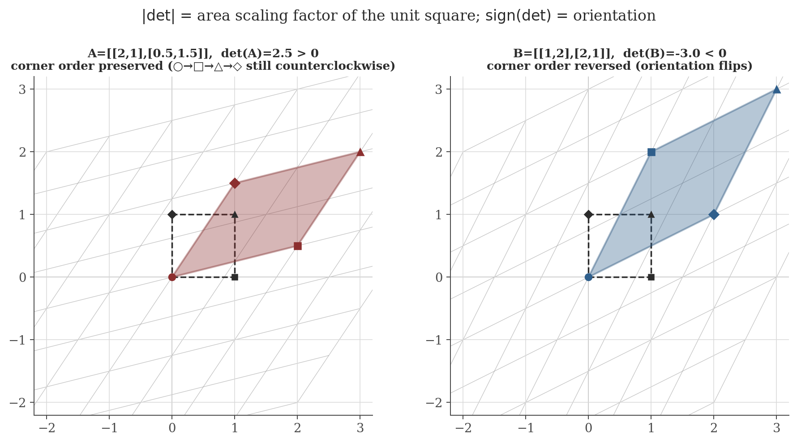

Matrices and Operations
Disclaimer: These are my personal notes compiled for my own reference and learning. They may contain errors, incomplete information, or personal interpretations. While I strive for accuracy, these notes are not peer-reviewed and should not be considered authoritative sources. Please consult official textbooks, research papers, or other reliable sources for academic or professional purposes.
Contents
1. Two ways to think about a matrix
A matrix is simultaneously two different mathematical objects, and conflating them is a common source of confusion. As a linear map, $A\in\mathbb{R}^{m\times n}$ sends $v\in\mathbb{R}^n$ to $Av\in\mathbb{R}^m$, and every property discussed below (invertibility, rank, determinant) is really a property of this map, only incidentally represented by a grid of numbers. As data, a matrix is a table — a covariance structure, an adjacency structure, a design matrix of regressors — and operations like transpose or multiplication are then bookkeeping rather than geometry. This note develops the linear-map view carefully, since it is what makes determinants, rank, and invertibility genuinely one connected theory rather than three separate ad hoc procedures.
2. Operations, and why multiplication is defined that way
Addition and scalar multiplication are entrywise: $(A+B)_{ij}=A_{ij}+B_{ij}$, $(cA)_{ij}=cA_{ij}$ — unsurprising, since $\mathbb{R}^{m\times n}$ is itself a vector space (of dimension $mn$) under these operations, a fact used without comment in the vector spaces note.
Matrix multiplication looks less obvious until derived from the linear-map view rather than memorized as a rule. If $A$ represents a linear map $\mathbb{R}^n\to\mathbb{R}^m$ and $B$ represents $\mathbb{R}^p\to\mathbb{R}^n$, define $AB$ to be the matrix representing the composition $A\circ B:\mathbb{R}^p\to\mathbb{R}^m$, i.e. the matrix satisfying $(AB)x = A(Bx)$ for every $x$. Since $(Bx)_i = \sum_k B_{ik}x_k$ and $A(Bx))_i=\sum_j A_{ij}(Bx)_j$, substituting gives $(A(Bx))_i = \sum_j A_{ij}\sum_k B_{jk}x_k = \sum_k\Big(\sum_j A_{ij}B_{jk}\Big)x_k$, which forces
The row-times-column formula is not an arbitrary convention; it is the unique formula that makes matrix multiplication represent function composition. This immediately explains two otherwise-mysterious facts: multiplication is associative, $(AB)C=A(BC)$, because function composition is always associative; and it is generally not commutative, because composing functions in a different order is a different function.
The transpose satisfies $(A^\top)_{ij}=A_{ji}$, with $(AB)^\top = B^\top A^\top$ (order reverses) — verify directly from the formula above: $\big((AB)^\top\big)_{ki} = (AB)_{ik} = \sum_j A_{ij}B_{jk} = \sum_j (B^\top)_{kj}(A^\top)_{ji} = (B^\top A^\top)_{ki}$.
3. Special matrices
- Identity $I$: represents the identity map, so $IA=AI=A$ for any compatible $A$.
- Diagonal $D=\operatorname{diag}(d_1,\ldots,d_n)$: acts by independent scaling along the coordinate axes, $Dx = (d_1x_1,\ldots,d_nx_n)$ — the case where the eigenvector basis (see eigenvalues and eigenvectors) is already the standard basis.
- Symmetric ($A^\top=A$) and skew-symmetric ($A^\top=-A$): every square real matrix decomposes uniquely as $A = \tfrac{1}{2}(A+A^\top) + \tfrac12(A-A^\top)$, a symmetric part plus a skew-symmetric part, mirroring the even/odd decomposition of a function.
- Orthogonal ($Q^\top Q = I$, equivalently $Q^{-1}=Q^\top$): represents a map that preserves lengths and angles ($\|Qx\|^2 = x^\top Q^\top Q x = x^\top x = \|x\|^2$) — rotations and reflections. These are exactly the matrices appearing in the spectral theorem's eigenbasis change of coordinates.
4. The determinant
Rather than starting from the cofactor-expansion formula (which is correct but looks arbitrary), it is more honest to state what property actually characterizes the determinant, and treat cofactor expansion as one consequence.
There is a unique function $\det:\mathbb{R}^{n\times n}\to\mathbb{R}$ that is (i) linear in each column separately with the other columns fixed (multilinear), (ii) equal to $0$ whenever two columns coincide (alternating), and (iii) satisfies $\det(I)=1$ (normalized).
The proof of existence and uniqueness is a genuine piece of multilinear algebra and is not reproduced here (Axler, 2024, Ch. 10, gives a full modern treatment; Strang, 2016, §5.1–5.2 gives the classical cofactor-expansion construction and shows it satisfies (i)–(iii)). What matters is that every familiar property of the determinant is forced by (i)–(iii) rather than being a separate fact to memorize:
- Row/column swap flips sign. Swapping two columns of $I$ and using alternating + multilinear on the sum of the swapped columns forces $\det$ to change sign — this is what makes $\det$ an oriented volume, not just a volume.
- Singular $\Rightarrow$ $\det=0$. If the columns of $A$ are linearly dependent, one column is a linear combination of the others; multilinearity reduces $\det(A)$ to a sum of determinants each having a repeated column, all zero by (ii).
- $\det(AB)=\det(A)\det(B)$. Both sides, as functions of $A$ for fixed $B$, are multilinear and alternating in the columns of $A$ and agree at $A=I$; uniqueness (up to the normalization already fixed) forces equality.
- $\det(A^\top)=\det(A)$. A direct consequence of the cofactor-expansion formula, or of property (i)–(iii) applied to rows instead of columns.
- Geometric meaning. $|\det(A)|$ is the volume of the image of the unit cube under $A$ (multilinearity in the columns is exactly linearity of volume in each edge vector), and $\operatorname{sign}(\det A)$ records whether $A$ preserves or reverses orientation.
- Eigenvalue product. $\det(A)=\prod_i\lambda_i$ — proved already in the eigenvalues note from the characteristic polynomial, restated here as a consequence of this section's determinant rather than a separate fact.

5. Invertibility: an equivalence theorem
For $A\in\mathbb{R}^{n\times n}$, the following are equivalent: (a) $A$ is invertible ($\exists\, A^{-1}$ with $AA^{-1}=A^{-1}A=I$); (b) $\det(A)\neq0$; (c) $Ax=0$ only for $x=0$ (trivial nullspace); (d) the columns of $A$ are linearly independent, hence a basis of $\mathbb{R}^n$; (e) $A$ has full rank $n$; (f) $Ax=b$ has a unique solution for every $b\in\mathbb{R}^n$.
(a)$\Leftrightarrow$(b) is the content of the Cramer's-rule / adjugate construction $A^{-1}=\frac{1}{\det A}\operatorname{adj}(A)$, well-defined exactly when $\det A\neq0$; (b)$\Leftrightarrow$(c) was shown in Section 4 (singular $\Rightarrow$ dependent columns $\Rightarrow$ nontrivial nullspace, and the argument reverses); (c)$\Leftrightarrow$(d)$\Leftrightarrow$(e) are restatements of linear independence and full rank (Section 6); (a)+(c)$\Rightarrow$(f) since $A^{-1}b$ is the unique solution when it exists. For the $2\times2$ case this specializes to the familiar
a special case of the general adjugate formula, verifiable directly by multiplying it out.
6. Rank and the structure of solution sets
$\operatorname{rank}(A)$ is the dimension of the column space $\{Ax : x\in\mathbb{R}^n\}\subseteq\mathbb{R}^m$ — equivalently (a nontrivial fact, proved in the vector spaces note via the rank–nullity theorem) the dimension of the row space, so $\operatorname{rank}(A)=\operatorname{rank}(A^\top)$ despite row space and column space living in different spaces when $m\neq n$.
Rank governs solvability of $Ax=b$ directly: a solution exists iff $b$ lies in the column space, i.e. iff $\operatorname{rank}([A\mid b]) = \operatorname{rank}(A)$ (appending $b$ does not enlarge the column space); the solution is unique iff additionally the nullspace of $A$ is trivial, i.e. $\operatorname{rank}(A)=n$ (the number of columns) — the general version of the invertibility theorem above, which was the special case $m=n$ with a solution guaranteed to exist.
7. Gaussian elimination and its cost
Elimination reduces $A$ to upper-triangular row-echelon form by, at each step $k=1,\ldots,n-1$, using row $k$'s pivot to zero out column $k$ in all rows below it. This simultaneously computes $\det(A)$ (product of the resulting diagonal, up to the sign from any row swaps), the rank (number of nonzero pivot rows), and — augmented with $I$, or via back-substitution — the solution to $Ax=b$ or the inverse $A^{-1}$.
Gaussian elimination on a dense $n\times n$ matrix costs $\frac{2}{3}n^3+O(n^2)$ floating-point operations.
This cubic scaling is why, for large systems, one avoids recomputing a full elimination from scratch when solving $Ax=b$ for many right-hand sides $b$: the elimination is cached as an $LU$ factorization ($A=LU$, $L$ lower-triangular, $U$ the upper-triangular result), computed once at $\frac{2}{3}n^3$ cost, after which each new $b$ costs only $O(n^2)$ via forward/back substitution.
8. Computation
The figure above is generated by matrices/generate_figures.py in this note's directory. The snippet below directly verifies the operation-count proof of Section 7 — a plain-loop (unvectorized) elimination counts its own multiply/subtract/divide operations, rather than trusting wall-clock timing of an optimized library routine, which would be confounded by caching and multithreading effects unrelated to the underlying flop count. It also confirms the rank/solvability criterion of Section 6 on a concrete rank-deficient system.
import numpy as np
def gaussian_elimination_flop_count(A):
"""Plain-loop Gaussian elimination (no pivoting), counting flops."""
A = A.copy()
n = A.shape[0]
flops = 0
for k in range(n - 1):
for i in range(k + 1, n):
m = A[i, k] / A[k, k]
flops += 1 # the division
for j in range(k, n):
A[i, j] -= m * A[k, j]
flops += 2 # one multiply, one subtract
return flops
for n in (20, 40, 80, 160):
rng = np.random.default_rng(0)
A = rng.normal(size=(n, n)) + n * np.eye(n) # diagonally dominant: avoids zero pivots
flops = gaussian_elimination_flop_count(A)
predicted = (2 / 3) * n**3
print(f"n={n:4d}: measured = {flops:9d} (2/3)n^3 = {predicted:9.0f} ratio = {flops/predicted:.3f}")
# A rank-deficient system: does b lie in the column space of A?
A = np.array([[1.0, 2.0], [2.0, 4.0]]) # rank 1: columns are parallel
b_consistent = np.array([1.0, 2.0]) # in the column space -> infinitely many solutions
b_inconsistent = np.array([1.0, 3.0]) # not in the column space -> no solution
print("rank(A) =", np.linalg.matrix_rank(A))
print("rank([A|b_consistent]) =", np.linalg.matrix_rank(np.column_stack([A, b_consistent])))
print("rank([A|b_inconsistent]) =", np.linalg.matrix_rank(np.column_stack([A, b_inconsistent])))
Actual output:
n= 20: measured = 5510 (2/3)n^3 = 5333 ratio = 1.033
n= 40: measured = 43420 (2/3)n^3 = 42667 ratio = 1.018
n= 80: measured = 344440 (2/3)n^3 = 341333 ratio = 1.009
n= 160: measured = 2743280 (2/3)n^3 = 2730667 ratio = 1.005
rank(A) = 1
rank([A|b_consistent]) = 1
rank([A|b_inconsistent]) = 2The measured-to-predicted ratio converges to $1$ as $n$ grows — exactly what the proof predicts, since the proof's approximation error is the $O(n^2)$ term dropped by the leading-order calculation, which shrinks relative to $\frac23n^3$ as $n\to\infty$. And exactly as Section 6 predicts: appending the consistent $b$ leaves the rank at $1$ (a solution exists — indeed infinitely many, since $\operatorname{rank}(A)=1<2=n$), while appending the inconsistent $b$ raises the rank to $2$ (no solution exists).
9. Common pitfalls
$AB=0$ does not imply $A=0$ or $B=0$. Example: $A=\begin{pmatrix}1&0\\0&0\end{pmatrix}$, $B=\begin{pmatrix}0&0\\0&1\end{pmatrix}$ — both nonzero, $AB=0$. Geometrically unsurprising: $B$'s image (the second coordinate axis) lies entirely in $A$'s nullspace (the second coordinate axis), so composing sends everything to $0$. This rules out "cancel $A$ from both sides" reasoning that is valid for scalars.
The determinant is multilinear in the columns, not additive as a function of the whole matrix. There is no simple formula for $\det(A+B)$ in terms of $\det(A)$ and $\det(B)$ except in special cases (e.g. one being a scalar multiple of the identity).
$(AB)^{-1}=B^{-1}A^{-1}$, not $A^{-1}B^{-1}$ — check directly: $(AB)(B^{-1}A^{-1}) = A(BB^{-1})A^{-1}=AIA^{-1}=I$. The same order-reversal as the transpose identity in Section 2, for the same reason (undoing a composition means undoing the last step first).
$\det(A)\neq0$ only says $A^{-1}$ exists as a mathematical object; it says nothing about numerical stability. A matrix that is technically invertible but has a very small $|\det|$ relative to its entries' scale (nearly-dependent columns) amplifies input errors enormously when solved — a fact quantified by the condition number, not by the determinant's magnitude alone. This is outside this note's scope; see Trefethen & Bau (1997, Lecture 12) for the precise statement and Golub & Van Loan (2013, §2.6) for its consequences for the algorithms in Section 7.
10. Connections
- Eigenvalues and eigenvectors. The determinant developed here from first principles is exactly the tool used there to define the characteristic polynomial and prove $\det(A)=\prod_i\lambda_i$.
- Vector spaces. Rank, column space, and nullspace are defined properly (and rank–nullity proved) there; this note only uses the results.
- Regression (OLS). The normal equations $\hat\beta=(X^\top X)^{-1}X^\top y$ require $X^\top X$ invertible, i.e. by the equivalence theorem of Section 5, $X$'s columns linearly independent — exactly the "no perfect multicollinearity" assumption in a regression note's Gauss–Markov conditions, now visible as a rank condition rather than an ad hoc requirement.
- Optimization / Hessians. A symmetric Hessian being positive definite (all eigenvalues positive, Section 4's eigenvalue-product fact plus the spectral theorem) is what makes a critical point a strict local minimum — the determinant sign test used in a multivariable-calculus second-derivative test is the $2\times2$ case of this.
11. References
- Strang, G. (2016). Introduction to Linear Algebra (5th ed.). Wellesley-Cambridge Press.
- Axler, S. (2024). Linear Algebra Done Right (4th ed.). Springer.
- Golub, G. H., & Van Loan, C. F. (2013). Matrix Computations (4th ed.). Johns Hopkins University Press.
- Trefethen, L. N., & Bau, D. (1997). Numerical Linear Algebra. SIAM.